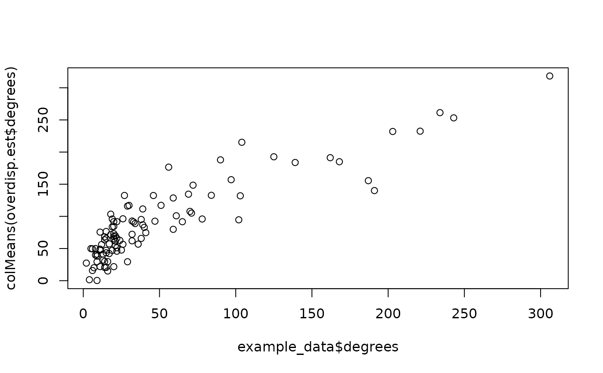

This function fits the ARD using the Overdispersed model using the original Gibbs-Metropolis Algorithm provided in Zheng, Salganik, and Gelman (2006). The population size estimates and degrees are scaled using a post-hoc procedure. For the Stan implementation, see overdispersedStan.
Usage
overdispersed(
ard,
known_sizes = NULL,
known_ind = NULL,
G1_ind = NULL,
G2_ind = NULL,
B2_ind = NULL,
N = NULL,
warmup = 1000,
iter = 1500,
refresh = NULL,
thin = 1,
verbose = FALSE,
alpha_tune = 0.4,
beta_tune = 0.2,
omega_tune = 0.2,
init = "MLE"
)Arguments
- ard
The `n_i x n_k` matrix of non-negative ARD integer responses, where the `(i,k)th` element corresponds to the number of people that respondent `i` knows in subpopulation `k`.
- known_sizes
The known subpopulation sizes corresponding to a subset of the columns of
ard.- known_ind
The indices that correspond to the columns of
ardwith known_sizes. By default, the function assumes the firstn_knowncolumns, wheren_knowncorresponds to the number ofknown_sizes.- G1_ind
A vector of indices denoting the columns of `ard` that correspond to the primary scaling groups, i.e. the collection of rare girls' names in Zheng, Salganik, and Gelman (2006). By default, all known_sizes are used. If G2_ind and B2_ind are not provided, `C = C_1`, so only G1_ind are used. If G1_ind is not provided, no scaling is performed.
- G2_ind
A vector of indices denoting the columns of `ard` that correspond to the subpopulations that belong to the first secondary scaling groups, i.e. the collection of somewhat popular girls' names.
- B2_ind
A vector of indices denoting the columns of `ard` that correspond to the subpopulations that belong to the second secondary scaling groups, i.e. the collection of somewhat popular boys' names.
- N
The known total population size.
- warmup
A positive integer specifying the number of warmup samples.
- iter
A positive integer specifying the total number of samples (including warmup).
- refresh
An integer specifying how often the progress of the sampling should be reported. By default, resorts to every 10
verbose = FALSE.- thin
A positive integer specifying the interval for saving posterior samples. Default value is 1 (i.e. no thinning).
- verbose
Logical value, specifying whether sampling progress should be reported.
- alpha_tune
A positive numeric indicating the standard deviation used as the jumping scale in the Metropolis step for alpha. Defaults to 0.4, which has worked well for other ARD datasets.
- beta_tune
A positive numeric indicating the standard deviation used as the jumping scale in the Metropolis step for beta Defaults to 0.2, which has worked well for other ARD datasets.
- omega_tune
A positive numeric indicating the standard deviation used as the jumping scale in the Metropolis step for omega Defaults to 0.2, which has worked well for other ARD datasets.
- init
A named list with names corresponding to the first-level model parameters, name 'alpha', 'beta', and 'omega'. By default the 'alpha' and 'beta' parameters are initialized at the values corresponding to the Killworth MLE estimates (for the missing 'beta'), with all 'omega' set to 20. Alternatively,
init = 'random'simulates 'alpha' and 'beta' from a normal random variable with mean 0 and standard deviation 1. By default,init = 'MLE'initializes values at the Killworth et al. (1998b) MLE estimates for the degrees and sizes and simulates the other parameters.
Value
A named list with the estimated posterior samples. The estimated parameters are named as follows, with additional descriptions as needed:
- betas
Log prevalence, if scaled, else raw beta parameters
- inv_omegas
Inverse of overdispersion parameters
- sigma_alpha
Standard deviation of alphas
- mu_beta
Mean of betas
- sigma_beta
Standard deviation of betas
- omegas
Overdispersion parameters
If scaled, the following additional parameters are included:
- degrees
Degree estimates
- sizes
Subpopulation size estimates
Details
This function fits the overdispersed NSUM model using the Metropolis-Gibbs sampler provided in Zheng et al. (2006).
References
Zheng, T., Salganik, M. J., and Gelman, A. (2006). How many people do you know in prison, Journal of the American Statistical Association, 101:474, 409–423
Examples
# Analyze an example ard data set using Zheng et al. (2006) models
# Note that in practice, both warmup and iter should be much higher
data(example_data)
ard <- example_data$ard
subpop_sizes <- example_data$subpop_sizes
known_ind <- c(1, 2, 4)
N <- example_data$N
overdisp.est <- overdispersed(ard,
known_sizes = subpop_sizes[known_ind],
known_ind = known_ind,
G1_ind = 1,
G2_ind = 2,
B2_ind = 4,
N = N,
warmup = 50,
iter = 100
)
# Compare size estimates
data.frame(
true = subpop_sizes,
basic = colMeans(overdisp.est$sizes)
)
#> true basic
#> 1 136961 134567.89
#> 2 56322 74281.23
#> 3 36246 57317.49
#> 4 69238 94694.50
#> 5 20174 47784.74
# Compare degree estimates
plot(example_data$degrees, colMeans(overdisp.est$degrees))

# Look at overdispersion parameter
colMeans(overdisp.est$omegas)
#> [1] 18.09640 17.17557 18.65176 19.08247 18.99742